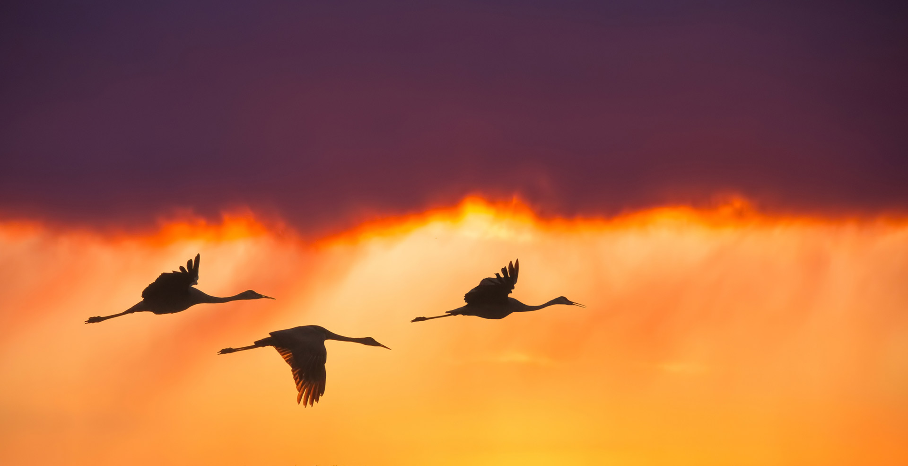

Vol d'oiseaux migrateurs

Par: Charly Lellouche
Date: 28 november 2007

Une espèce de danse au carrefour des cieux
Et, planant en silence, en leur envol gracieux,
Regardez-les signer, dessiner dans l'espace
Les lignes d'une lettre, un rêve qui s'efface.
Venant d'on ne sait où, allant dans un ailleurs,
Ils quittent nos hivers, les oiseaux migrateurs,
Et crient leur liberté, sans prison ni barrière,
En leurs pépiements d'école buissonnière.
Nous, nous ne bougeons pas, au gré de nos saisons,
Eux nous laissent le froid, blottis en nos maisons,
Nous cherchons dans la vie à laisser une trace,
Eux ils vont de l'avant et nous laissent sur place,
Mais nous savons qu'un jour, lorsque nous seront morts,
L'âme enfin libérée du poids de notre corps,
Nous saurons le plaisir d'un envol en errance,
À être migrateurs, de la terre en partance.